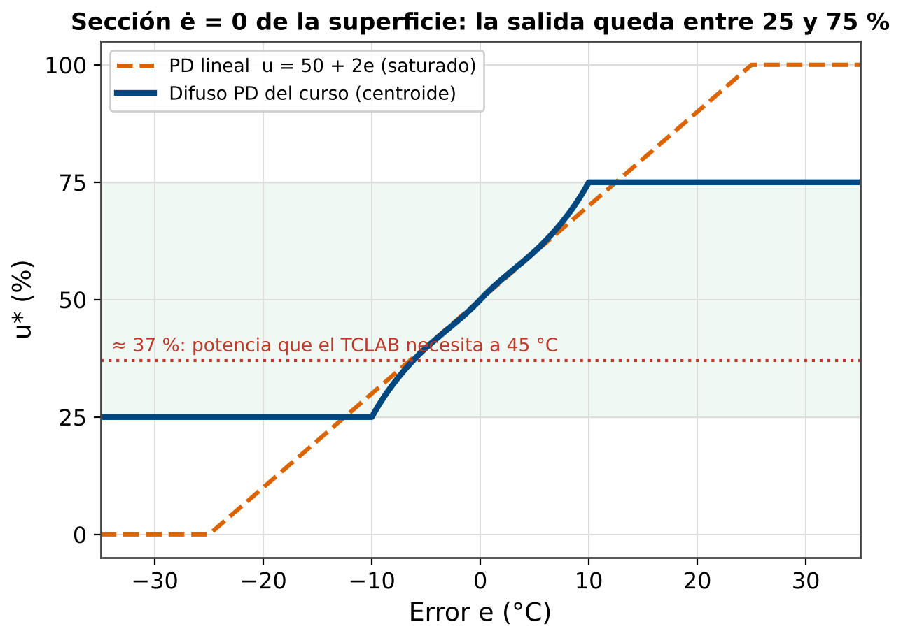
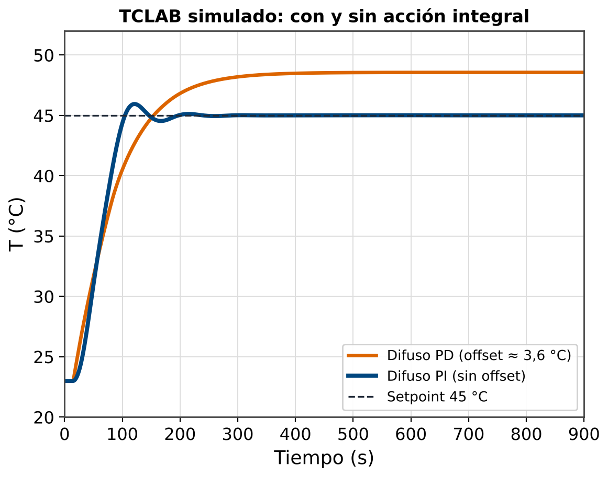
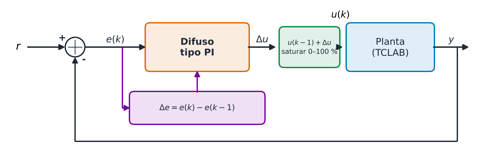
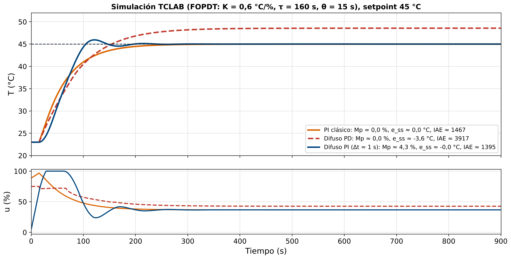

Mostrar en pantalla los resultados del Lab 12 (tabla de métricas):
Recoger respuestas: algunos dirán "agregar integral", otros "ajustar la tabla", otros "aumentar la ganancia". Todas son válidas pero tienen consecuencias diferentes.
Conectar: hoy se estudia la forma formal y estructurada de agregar acción integral al controlador difuso.
Cuando $e=0$ y $\dot{e}=0$, la tabla da un valor fijo (ej: 50%). Si la planta necesita menos potencia en equilibrio, el error persiste.


En equilibrio ($e=0$, $\Delta e=0$): $\Delta u = 0$ → $u(k) = u(k-1)$ (se mantiene el valor que eliminó el error).

| $e \backslash \Delta e$ | N | ZO | P |
|---|---|---|---|
| NB | -5 | -5 | -2.5 |
| NS | -5 | -2.5 | 0 |
| ZO | -2.5 | 0 | +2.5 |
| PS | 0 | +2.5 | +5 |
| PB | +2.5 | +5 | +5 |
Δu en %/paso (Δt = 1 s) | Filas: error $e=T_{ref}-T$ (NB→PB) | Columnas: $\Delta e \in [-0.2, 0.2]$ °C/paso (N→P)
Protección contra saturación:
if (u < 0) u = 0;
if (u > 100) u = 100;
// Solo integrar si no saturado
// o si va en dirección correctaUna tabla $T[i][j]$ es monótona no decreciente si:
Mayor desviación → mayor acción de control.
$y(k+1)=a\,y(k)+b\,u(k)$, $a=e^{-\Delta t/T}$, $b=K(1-a)$, $k_i=\partial\Delta u/\partial e$:
TCLAB: $K=0.6$ °C/%, $T=160$ s, $\Delta t=1$ s → límite ≈ 1070 %/°C por paso; la tabla da $k_i\approx0.17$.
Pero el criterio ignora el retardo (θ ≈ 15 s): con ±10 %/paso a Δt = 0.1 s la simulación oscila. Verificar siempre por simulación.
Resolver la hoja de trabajo: diseño completo del difuso PI para el Motor DC con las particiones definidas en Clase 12.
Los estudiantes deben:
Mostrar la tabla comparativa final (PID vs Difuso PD vs PI vs PID difuso).
Respuesta esperada: cuando la planta es no lineal y el operador puede definir reglas (industria de alimentos, hornos, reactores).
Dar instrucciones de la tarea.
fuzzy_pi_update() del material de clase en el sketch del TCLAB. Probar con simulación (planta de primer orden del sketch de Clase 10). Comparar gráfica PD vs PI difuso.| Característica | PID Clásico | Difuso PD | Difuso PI | PID Difuso |
|---|---|---|---|---|
| Estructura | Lineal | No lineal | No lineal | No lineal |
| Error estacionario | Cero (con I) | Presente | Cero | Cero |
| Sintonización | Fórmulas (Ziegler-Nichols) | Reglas experto | Reglas experto | Compleja |
| No linealidad | No maneja | Maneja bien | Maneja bien | Maneja mejor |
| Complejidad | Baja | Media | Media | Alta (125 reglas) |
| Aplicación típica | Plantas lineales | PD simple | Plantas no lineales | Sistemas complejos |
Estructura del Difuso PI: Derivación Formal
El controlador difuso PI incremental se define como:
Para demostrar que esto equivale a una acción integral, desarrollamos:
Si $f$ es lineal con $f(e, \Delta e) = K_I \cdot e + K_P \cdot \Delta e$:
El primer término de la suma es la integral discreta del error. El segundo se colapsa: $\sum \Delta e = e(k) - e(0)$.
Esta es exactamente la estructura del controlador PID discreto en forma de posición. El difuso PI es, por tanto, una generalización no lineal del PI discreto.
/**
* fuzzy_pi_tclab.h
* Controlador Difuso tipo PI (incremental) para TCLAB
* Clase 13 | Control Difuso | Arduino UNO
* e = Tref - T [C], delta_e = e(k) - e(k-1) [C/paso], paso = 1 s
*/
#ifndef FUZZY_PI_TCLAB_H
#define FUZZY_PI_TCLAB_H
#include "fuzzy_types.h"
#include "fuzzy_mf.h"
// ---- Tabla PI 5x3 (delta_u en %/paso) ----
// Filas: e = NB..PB ; columnas: delta_e = N, ZO, P
const float PI_TABLE[5][3] = {
{ -5.0f, -5.0f, -2.5f}, // NB (muy caliente)
{ -5.0f, -2.5f, 0.0f}, // NS
{ -2.5f, 0.0f, 2.5f}, // ZO
{ 0.0f, 2.5f, 5.0f}, // PS
{ 2.5f, 5.0f, 5.0f}, // PB (muy frio)
};
// ---- Particion de delta_e: N, ZO, P en [-0.2, 0.2] C/paso (Ruspini) ----
void fuzz_de_pi(float d, float mu[3]) {
mu[0] = ltrap(d, -0.2f, 0.0f);
mu[1] = trimf(d, (TriMF){-0.2f, 0.0f, 0.2f});
mu[2] = rtrap(d, 0.0f, 0.2f);
}
// ---- Estado del integrador ----
static float u_pi = 0.0f; // arranque sin salto
// ---- Inferencia PI difuso ----
float fuzzy_pi_update(float e, float delta_e) {
FuzzyDegrees me = fuzzify_error(e); // 5 terminos (Clase 8)
float mu_de[3];
fuzz_de_pi(delta_e, mu_de);
float num = 0.0f, den = 0.0f;
for (uint8_t i = 0; i < N_TERMS; i++) {
if (me.mu[i] < 0.001f) continue;
for (uint8_t j = 0; j < 3; j++) {
if (mu_de[j] < 0.001f) continue;
float alpha = fmin2(me.mu[i], mu_de[j]);
num += alpha * PI_TABLE[i][j];
den += alpha;
}
}
float delta_u = (den > 1e-6f) ? (num / den) : 0.0f;
// Integrar y saturar: en forma incremental, recortar u
// es el anti-windup (no queda integral "escondida")
u_pi = constrain(u_pi + delta_u, 0.0f, 100.0f);
return u_pi;
}
#endif"""
compare_pd_pi.py
Comparativa: Difuso PD (Clase 10) vs Difuso PI incremental (Clase 13) en el TCLAB
Planta simulada FOPDT: K = 0.6 C/%, tau = 160 s, retardo theta = 15 s
Clase 13 - Control Difuso
"""
import numpy as np
import matplotlib.pyplot as plt
DT, T_MAX, T_REF, T0 = 1.0, 900.0, 45.0, 23.0 # paso de 1 s
K, TAU, THETA = 0.6, 160.0, 15.0
def trimf(x, a, b, c):
return max(0.0, min((x - a) / (b - a), (c - x) / (c - b)))
def trapmf(x, a, b, c, d):
return max(0.0, min((x - a) / (b - a), 1.0, (d - x) / (d - c)))
# ---- Particiones del curso (e = Tref - T) ----
def mu_e(e): # NB NS ZO PS PB
return [trapmf(e, -40, -30, -20, -10), trimf(e, -30, -15, 0), trimf(e, -10, 0, 10),
trimf(e, 0, 15, 30), trapmf(e, 10, 20, 30, 40)]
def mu_de(de): # NN NS ZO PS PP (de en C/s)
return [trapmf(de, -7, -6, -5, -2.5), trimf(de, -5, -2.5, 0), trimf(de, -2.5, 0, 2.5),
trimf(de, 0, 2.5, 5), trapmf(de, 2.5, 5, 6, 7)]
def mu_dpi(d, w=0.2): # N ZO P (De en C/paso, Ruspini)
return [trapmf(d, -9 * w, -8 * w, -w, 0), trimf(d, -w, 0, w), trapmf(d, 0, w, 8 * w, 9 * w)]
# ---- Difuso PD (tabla espejada de Clase 7, metodo de altura) ----
RULES = [[0, 0, 1, 1, 2], [0, 1, 1, 1, 2], [1, 1, 2, 3, 3], [1, 2, 3, 3, 4], [2, 3, 3, 4, 4]]
CENT = [0, 25, 50, 75, 100]
def pd_fuzzy(e, de):
me, md = mu_e(e), mu_de(de); num = den = 0.0
for i in range(5):
for j in range(5):
a = min(me[i], md[j])
num += a * CENT[RULES[i][j]]; den += a
return num / den if den > 1e-9 else 50.0
# ---- Difuso PI (tabla 5x3, Delta_u en %/paso) ----
PI_TABLE = [[-5, -5, -2.5], [-5, -2.5, 0], [-2.5, 0, 2.5], [0, 2.5, 5], [2.5, 5, 5]]
def pi_fuzzy(e, de_paso, u_prev):
me, md = mu_e(e), mu_dpi(de_paso); num = den = 0.0
for i in range(5):
for j in range(3):
a = min(me[i], md[j])
num += a * PI_TABLE[i][j]; den += a
du = num / den if den > 1e-9 else 0.0
return float(np.clip(u_prev + du, 0, 100)) # integrar + saturar (anti-windup)
# ---- Simulacion ----
def simulate(kind):
n = int(T_MAX / DT) + 1; d = int(THETA / DT)
T = np.full(n, T0); u = np.zeros(n); e_prev = T_REF - T0; u_pi = 0.0
for k in range(1, n):
e = T_REF - T[k - 1]; de = e - e_prev; e_prev = e
if kind == 'PD': u[k - 1] = pd_fuzzy(e, de / DT)
else: u_pi = pi_fuzzy(e, de, u_pi); u[k - 1] = u_pi
ud = u[k - 1 - d] if k - 1 - d >= 0 else 0.0
T[k] = T[k - 1] + DT / TAU * (-(T[k - 1] - T0) + K * ud)
u[-1] = u[-2]
return T, u
t = np.arange(int(T_MAX / DT) + 1) * DT
T_pd, u_pd = simulate('PD'); T_pi, u_pi = simulate('PI')
for name, T in [('PD', T_pd), ('PI', T_pi)]:
print(f"{name}: T final = {T[-1]:.2f} C, IAE = {np.sum(np.abs(T_REF - T)) * DT:.0f} C*s")
fig, ax = plt.subplots(2, 1, figsize=(11, 7), sharex=True)
ax[0].plot(t, T_pd, 'r--', lw=2, label='Difuso PD'); ax[0].plot(t, T_pi, 'b-', lw=2, label='Difuso PI')
ax[0].axhline(T_REF, color='k', ls='--'); ax[0].set_ylabel('T (C)'); ax[0].legend(); ax[0].grid(alpha=.3)
ax[1].plot(t, u_pd, 'r--', t, u_pi, 'b-'); ax[1].set_ylabel('u (%)'); ax[1].set_xlabel('Tiempo (s)'); ax[1].grid(alpha=.3)
plt.tight_layout(); plt.savefig('pd_vs_pi.png', dpi=150); plt.show()
Modelo FOPDT del TCLAB ($K=0.6$ °C/%, $\tau=160$ s, $\theta=15$ s). El difuso PD queda ≈ 3,6 °C por encima; el difuso PI (tabla 5×3, Δt = 1 s) elimina el error con $M_p\approx4\%$. Todas las figuras se generan con imagenes/generar_imagenes.py.